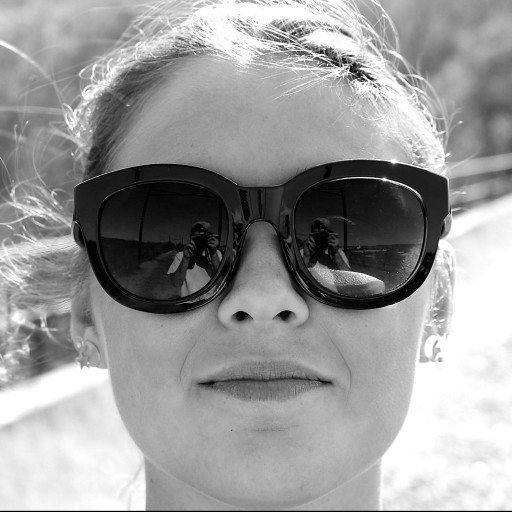

Juliana Russo
Hi, I'm Juliana Russo. An freelance UX Designer living in the Hudson Valley of New York.
I have been an educator for the last eight years. I am originally from Long Island, NY, and currently live upstate in the beautiful Hudson Valley. Some of my favorite places I have lived include Munich, Germany, and Asheville, North Carolina.I have been working in education for the last eight years and am passionate about creating positive change through my work. I am a problem solver, deep thinker, storyteller, and self-proclaimed plant hoarder. I am thrilled to be joining the design world as a UX and Product Designer. I look forward to building new relationships, collaborating on projects, and creating human-centered designs.